ParkVision 智能停车系统测试报告
项目名称：ParkVision-System 智能停车 CPS 演示系统
测试主题：系统测试、功能验证、接口联动、非功能测试与可用性评估
测试日期：2026-05-18
测试环境：本地 Windows 环境，前端预览服务 http://localhost:5173，后端服务 http://localhost:8080
测试结论：本轮系统测试通过，功能测试 12/12 通过，黑盒异常测试 5/5 通过，性能测试所有场景成功率 100%。
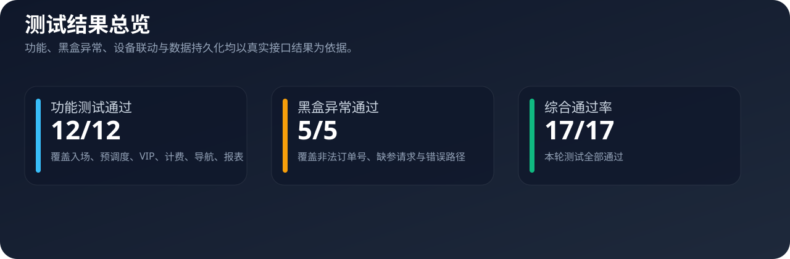
1. 测试目标
本轮汇报的目标是证明 ParkVision 已经具备完整的系统级演示能力，而不是停留在前端静态页面或单点功能展示。测试重点包括：
- 验证前端页面是否通过后端 API 获取真实业务状态。
- 验证订单、车位、调度、AGV、设备、计费、导航、管理报表之间是否能够形成闭环。
- 验证数据库持久化链路是否正常，系统是否依赖后端 H2 文件数据库保存业务状态。
- 验证摄像头、闸机、充电桩、AGV 等外部设备模拟接口是否能参与联动。
- 验证异常输入、非法订单、缺失参数等黑盒场景是否被后端正确处理。
- 验证主要接口在并发访问下的响应时间和成功率。
- 形成可复用的测试报告、截图素材、性能图表和 PPT 制作依据。
2. 测试范围
2.1 被测系统模块
| 模块 | 前端页面 | 后端接口/服务 | 测试重点 |
|---|---|---|---|
| 运营首页 | 运营首页 | /api/dashboard/summary, /api/forecast/traffic, /api/slots |
KPI、交通预测、车位状态、事件流 |
| AI 感知 | AI 视觉感知 | /api/edge/vision/infer, /api/devices/overview |
车牌识别、入侵检测、急停联动 |
| 调度中心 | 调度中心 | /api/dispatch/queue, /api/dispatch/agvs, /api/dispatch/pre-dispatch, /api/dispatch/vip |
预调度、VIP 插队、AGV 状态 |
| 数字孪生 | 数字孪生 | /api/slots, /api/dispatch/agvs, /api/devices/overview |
车位、AGV、急停状态可视化 |
| 车主端 | 车主端 | /api/orders, /api/orders/{orderNo}/retrieve, /touch-and-go, /pay |
取车、临时取物、支付关闭订单 |
| 动态计费 | 动态计费引擎 | /api/pricing/preview, /api/admin/pricing-rules |
按订单、时长、峰值、充电、VIP 计算费用 |
| 室内导航 | 室内导航 | /api/navigation/indoor |
交接区导航、ETA、AGV 同步、安全提示 |
| 管理台 | 管理报表与台账 | /api/admin/orders, /alerts, /pricing-rules, /access-list, /report |
订单、告警、规则、名单、报表 |
| 系统网关 | 系统网关 | /api/system/nodes, /api/devices/overview |
节点健康、设备列表、事件流 |
2.2 不在本轮范围内的内容
| 内容 | 当前处理方式 | 说明 |
|---|---|---|
| 真实物理摄像头、闸机、PLC、AGV | 后端模拟真实协议数据 | 项目没有实体硬件，本轮用 ONVIF、Modbus/TCP、OCPP 风格字段模拟设备接入 |
| 外部 MySQL 服务 | 默认 H2 文件数据库 | 当前仓库拉取后无需建库，首次启动自动生成 backend/data/parkvision.mv.db |
| 第三方支付回调 | 后端订单状态模拟 | 当前验证支付完成后的订单关闭和车位释放，不接真实支付网关 |
3. 测试环境
| 项目 | 配置 |
|---|---|
| 操作系统 | Windows 本地开发环境 |
| 前端 | Vue 3 + Vite，预览端口 5173 |
| 后端 | Spring Boot 3.4.1，服务端口 8080 |
| 数据库 | H2 文件数据库，路径 backend/data/parkvision.mv.db |
| Java | 项目要求 Java 17+，本机运行日志显示 Java 25 |
| Node.js | v22.17.1 |
| 截图工具 | Playwright headless Chromium |
| PDF 导出 | Markdown 转 HTML，再由无头 Chromium 导出 PDF |
系统启动命令：
powershell -ExecutionPolicy Bypass -File .\start.ps1 -Mode preview -Detached -NoInstall
系统健康检查结果：
| 检查项 | 结果 |
|---|---|
后端 /actuator/health |
UP |
前端首页 http://localhost:5173 |
HTTP 200 |
| 数据库模式 | H2 文件数据库 |
| 设备模式 | 后端设备模拟 |
4. 测试流程
本轮测试按照“先环境、再功能、再异常、再性能、最后汇总”的方式执行。
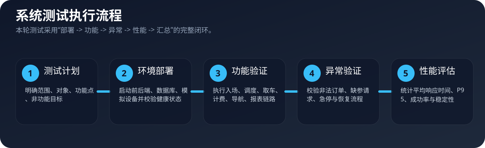
执行流程如下：
| 阶段 | 工作内容 | 输出 |
|---|---|---|
| 测试计划 | 确定系统测试范围、功能点、异常场景和非功能指标 | 测试用例表、接口清单 |
| 环境部署 | 启动前端预览、后端服务、H2 数据库和设备模拟服务 | 健康检查结果 |
| 功能验证 | 执行入场、取车、VIP、预调度、AI、导航、报表等链路 | system-test-results.json |
| 异常验证 | 输入非法订单号、缺失参数等黑盒场景 | 异常响应记录 |
| 性能测试 | 对 6 类接口执行并发请求 | performance-summary.json 和性能图 |
| 页面取证 | 使用真实前端页面截图 | assets/screenshots/*.png |
| 结果汇总 | 编写报告与 PPT 制作说明 | Markdown 报告、PDF 报告、PPT 指导文档 |
5. 测试数据说明
本轮测试使用的不是前端本地假数据。业务数据从后端 API 返回，并由 H2 文件数据库持久化保存。设备侧数据由后端模拟真实设备协议字段，参与页面展示和业务联动。
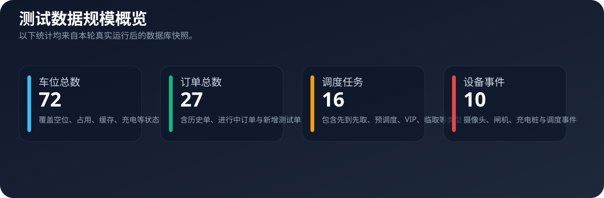
| 数据类型 | 数量 | 来源 | 说明 |
|---|---|---|---|
| 车位 | 72 | 数据库 | 覆盖空位、占用、缓存、充电等状态 |
| 订单 | 27 | 数据库 | 包含初始种子订单和本轮测试新增订单 |
| 调度任务 | 16 | 数据库 | 覆盖先到先取、预调度、VIP、临停取物等任务 |
| AGV | 4 | 数据库/设备模拟 | 包含坐标、电量、模式、速度和最近指令 |
| 告警 | 9 | 数据库 | 覆盖设备、调度、安全类告警 |
| 名单数据 | 12 | 数据库 | 白名单、黑名单、临时授权 |
| 计费规则 | 4 | 数据库 | 基础计费、峰值、充电、VIP 策略 |
| 摄像头 | 3 | 后端设备模拟 | ONVIF Profile T 风格字段 |
| 闸机 | 3 | 后端设备模拟 | Modbus/TCP 风格字段 |
| 充电桩 | 3 | 后端设备模拟 | OCPP 1.6J 风格字段 |
6. 需求测试
6.1 功能性需求验证
| 需求编号 | 功能需求 | 验证方式 | 测试结果 |
|---|---|---|---|
| FR-01 | 系统应展示停车场运营概览 | 访问运营首页并读取 /api/dashboard/summary |
通过 |
| FR-02 | 系统应支持车辆入场并分配车位 | 调用 /api/orders/entry，检查订单与车位 |
通过 |
| FR-03 | 系统应支持取车、临时取物、支付完成 | 调用订单动作接口，检查状态流转 | 通过 |
| FR-04 | 系统应支持预调度 | 调用 /api/dispatch/pre-dispatch，检查队列头部任务 |
通过 |
| FR-05 | 系统应支持 VIP 取车插队 | 调用 /api/dispatch/vip，检查队列和订单状态 |
通过 |
| FR-06 | 系统应展示 AGV 状态和数字孪生 | 访问数字孪生页面，读取 AGV 与车位数据 | 通过 |
| FR-07 | 系统应支持 AI 车牌识别 | 调用 /api/edge/vision/infer，检查摄像头状态 |
通过 |
| FR-08 | 系统应支持入侵触发急停 | 模拟入侵识别，检查闸机和节点状态 | 通过 |
| FR-09 | 系统应支持动态计费预览 | 调用 /api/pricing/preview，检查费用组成项 |
通过 |
| FR-10 | 系统应支持室内导航 | 调用 /api/navigation/indoor，检查 ETA 和安全提示 |
通过 |
| FR-11 | 系统应支持管理台报表 | 调用 /api/admin/report，检查摘要和曲线数据 |
通过 |
| FR-12 | 系统应支持设备和节点状态展示 | 调用 /api/devices/overview, /api/system/nodes |
通过 |
6.2 非功能性需求验证
| 需求编号 | 非功能需求 | 验证方式 | 测试结果 |
|---|---|---|---|
| NFR-01 | 可启动性 | 使用统一脚本启动前后端 | 通过 |
| NFR-02 | 可持久化 | 使用 H2 文件数据库保存订单、车位、设备事件 | 通过 |
| NFR-03 | 响应性能 | 对关键接口进行并发请求压测 | 通过 |
| NFR-04 | 容错性 | 黑盒测试非法订单、缺失参数 | 通过 |
| NFR-05 | 可用性 | 前端 9 个主要页面均可访问并展示真实状态 | 通过 |
| NFR-06 | 可观测性 | 系统节点、设备事件、告警和接口响应均可查看 | 通过 |
7. 功能性测试
7.1 功能测试结果汇总
| 测试编号 | 测试项 | 预期结果 | 实际结果 | 结论 |
|---|---|---|---|---|
| F-00 | 服务健康检查 | 后端健康状态为 UP，核心接口可访问 |
/actuator/health 返回 UP |
通过 |
| F-01 | 模拟入场创建订单并占用车位 | 订单数增加，新增订单为 PARKED，车位不为空 |
新订单创建成功，车位状态更新 | 通过 |
| F-02 | 预调度插入队列 | 队列头部新增高峰预调度移位任务 | 队列新增预调度任务 | 通过 |
| F-03 | VIP 取车插队 | 订单状态变为 RETRIEVING，VIP 任务进入队列 |
VIP 任务插入队列头部 | 通过 |
| F-04 | 临停取物 | 订单状态变为 TOUCHING，车位变为 buffer |
状态和车位同步更新 | 通过 |
| F-05 | 支付完成并关闭订单 | 订单变为 FINISHED，车位释放，金额计算 |
订单关闭，金额大于 0 | 通过 |
| F-06 | AI 识别正常流程 | 返回 OCR 结果，摄像头状态更新，不急停 | 返回车牌、置信度和正常动作 | 通过 |
| F-07 | AI 入侵触发急停 | 摄像头 ROI 风险、闸机急停、节点预警 | 急停状态正确传播 | 通过 |
| F-08 | 人工解除急停 | 闸机急停位恢复，系统回到自动模式 | 急停解除成功 | 通过 |
| F-09 | 动态计费预览 | 返回订单、时长、计费组成和总金额 | 返回 4 类费用组成项 | 通过 |
| F-10 | 室内接驳导航 | 返回交接区、剩余距离、ETA、安全提示 | 导航快照正常 | 通过 |
| F-11 | 管理台 AI 报表 | 返回查询摘要和周收入对比曲线 | 返回摘要和曲线数组 | 通过 |
7.2 前端页面截图取证
运营首页
首页展示车位占用率、车流量、AGV 在线数、实时告警、交通预测、控制闭环、车位概览和事件流。
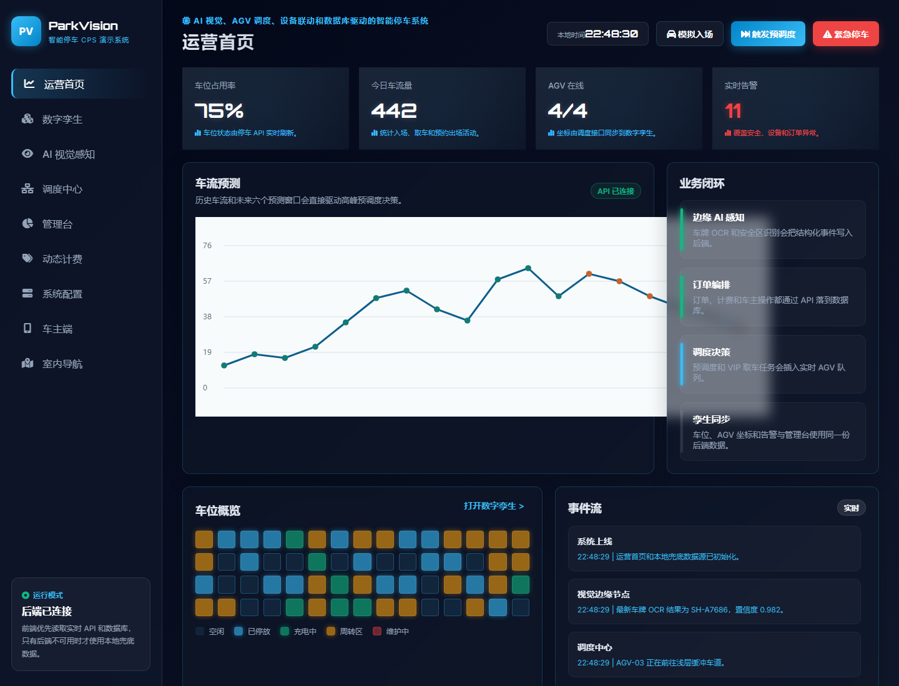
数字孪生
数字孪生页面展示 3D 风格车位网格、AGV 坐标、电量、速度、任务和安全状态。
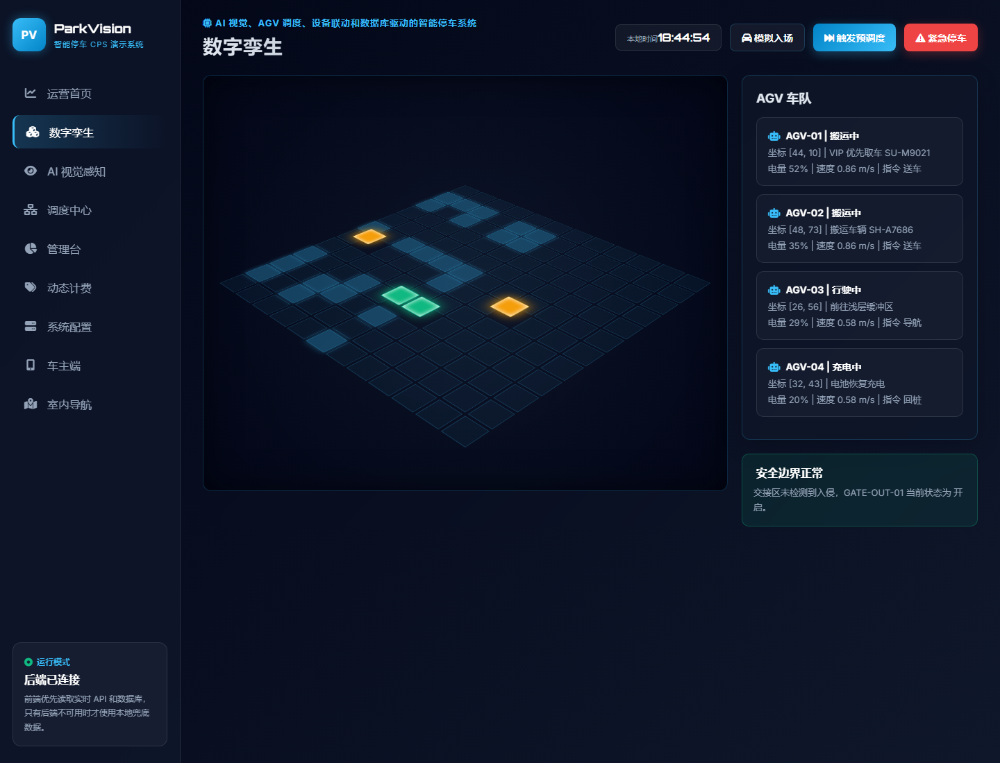
AI 视觉感知
AI 页面展示边缘摄像头推理结果、车牌 OCR、ROI 安全区、推理 JSON、预测窗口和设备事件。
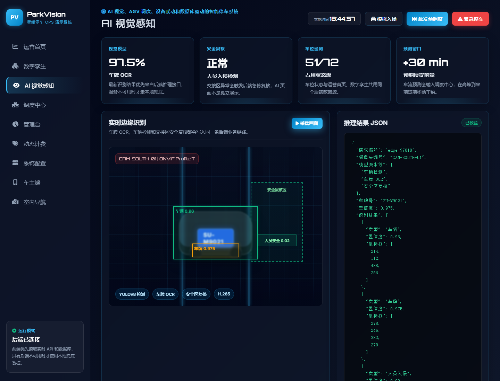
调度中心
调度中心展示实时调度队列、VIP、预调度、先到先取任务、闸机释放条件和充电桩状态。
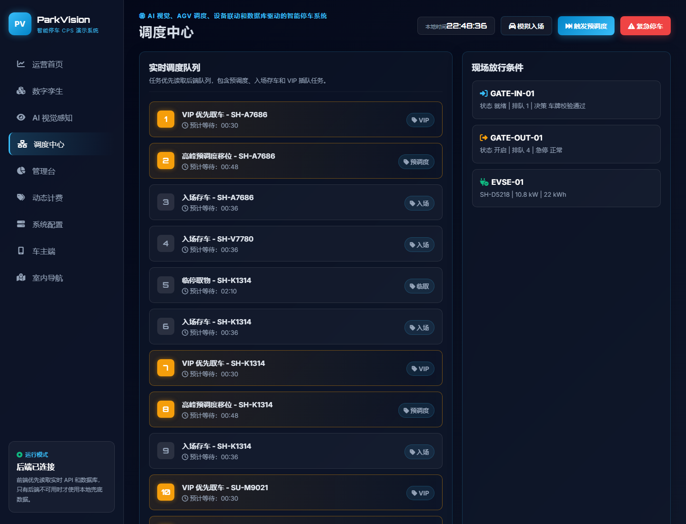
管理台报表
管理台支持生成运营报表，并展示周收入对比图。
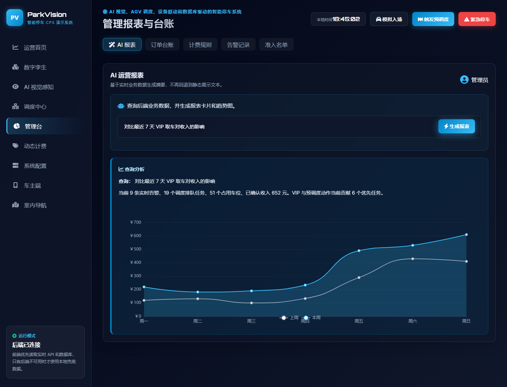
管理台订单
订单表来自后端管理接口，可查看订单号、车牌、事件、车位、状态和费用。
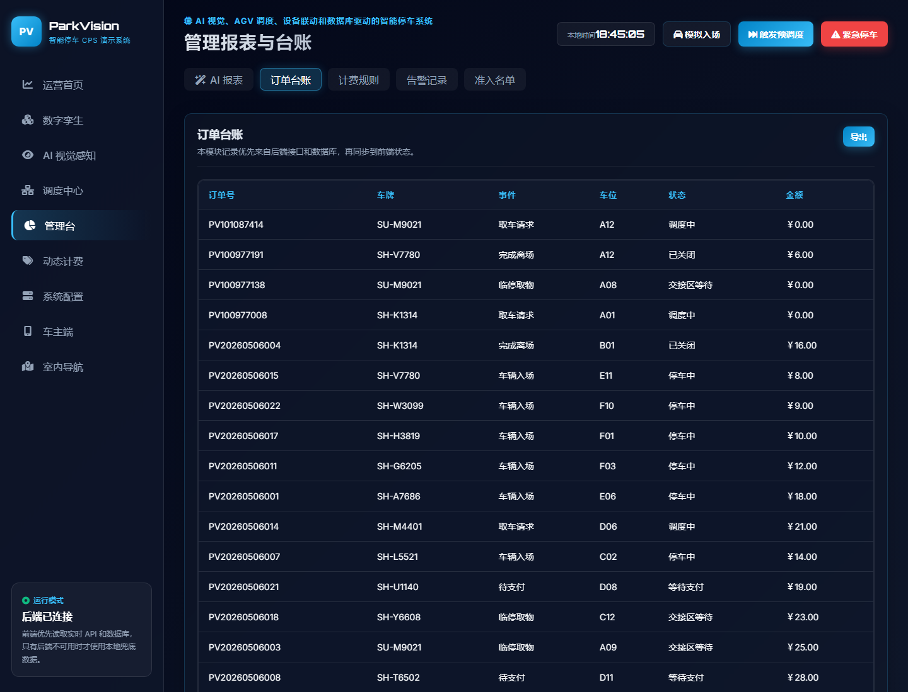
动态计费
计费页读取后端计费预览，展示基础停车、峰值调节、充电费、VIP 费等组成项。
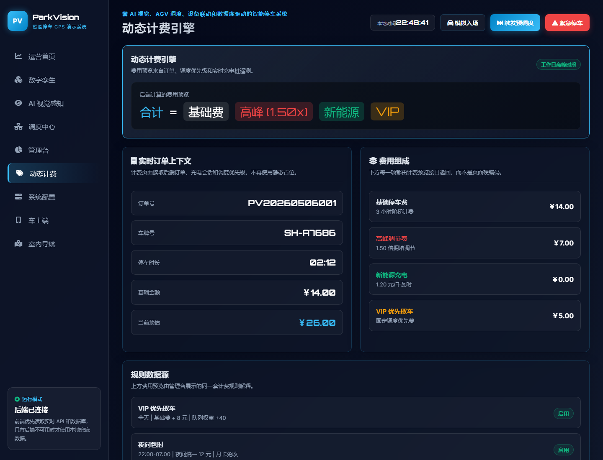
系统网关
系统页展示名单、节点健康、摄像头、闸机、充电桩和设备事件。
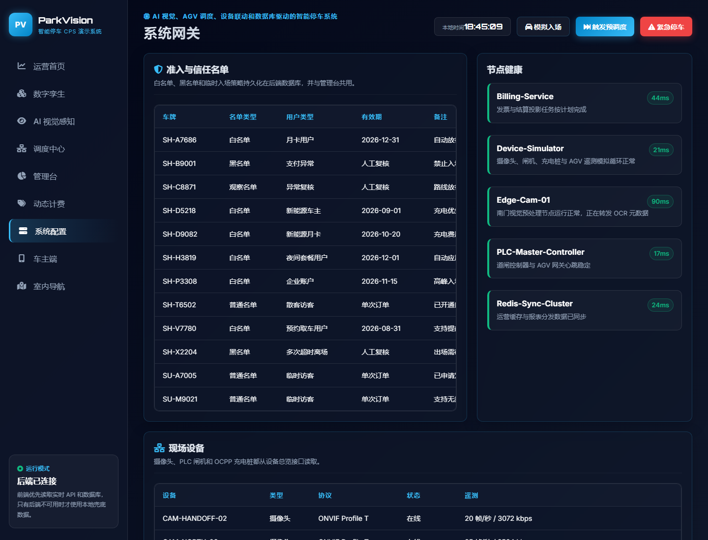
车主端
车主端支持取车、临时取物、VIP 插队和支付关闭订单。
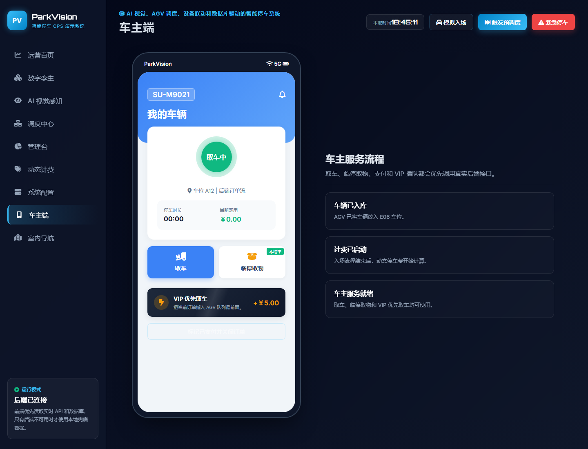
室内导航
室内导航页展示当前订单、车牌、车位、目标闸机、剩余距离、车主 ETA 和 AGV ETA。
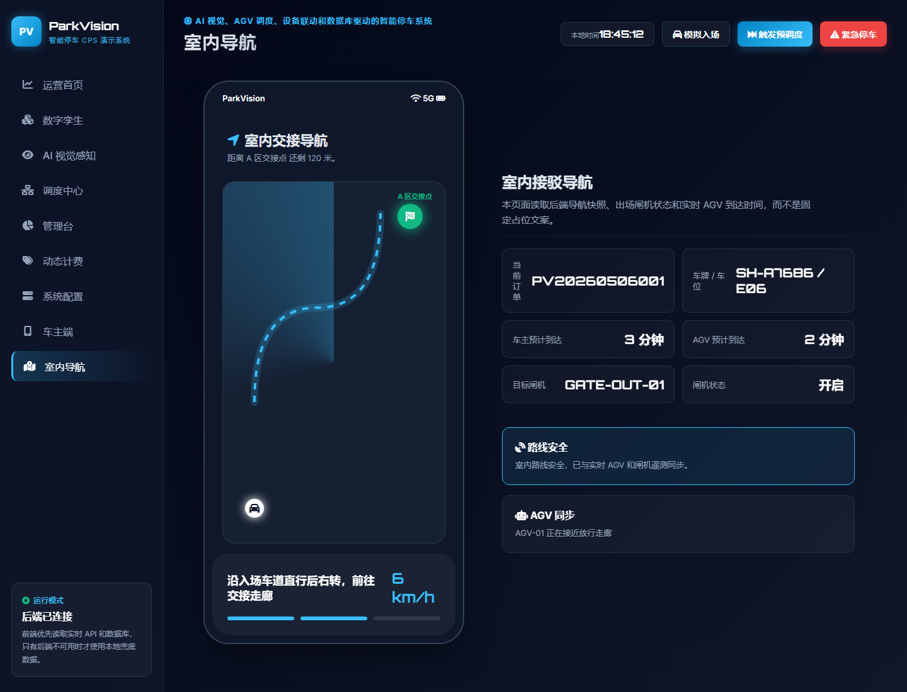
急停状态
入侵检测触发急停后，数字孪生页面出现安全停机状态，闸机和节点同步进入安全锁定状态。
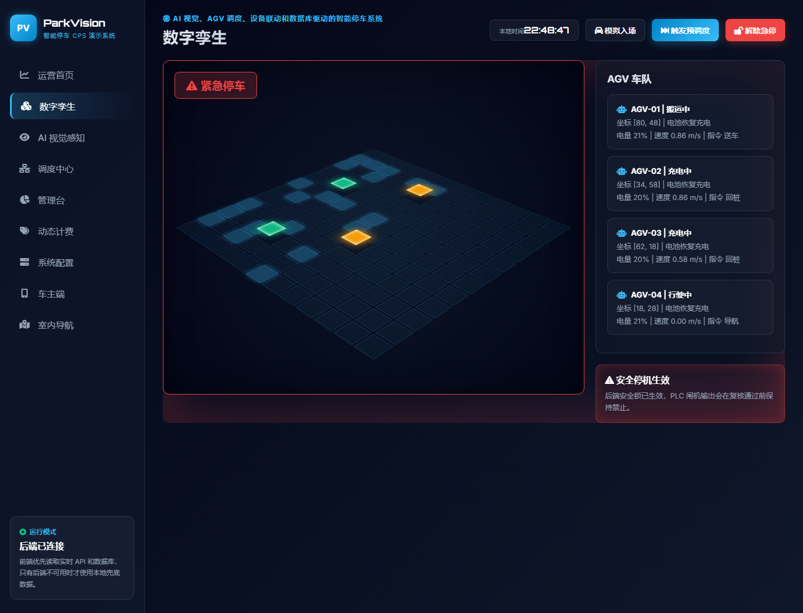
8. 静态测试
8.1 前端静态测试
| 检查项 | 检查结果 |
|---|---|
| 路由完整性 | 9 个核心页面均已注册路由 |
| API 接入 | 主要页面通过 parkingStore 调用后端 API |
| 构建检查 | frontend\npm run build 可执行 |
| 单元测试 | frontend\npm test 可执行 |
| 前端兜底 | 保留备用模式，但后端在线时优先使用 API 数据 |
前端关键页面与真实数据来源：
| 页面 | 数据来源 |
|---|---|
| 运营首页 | summary, forecast, slots, events |
| 数字孪生 | slots, agvs, devices |
| AI 视觉感知 | visionResult, devices, forecast |
| 调度中心 | queue, devices.gates, devices.chargers |
| 车主端 | orders, queue, ownerTimeline |
| 动态计费 | pricingPreview, pricingRules |
| 系统网关 | accessList, systemNodes, devices |
| 室内导航 | indoorRoute, devices.gates |
8.2 后端静态测试
| 检查项 | 检查结果 |
|---|---|
| 控制器分层 | 运营首页、订单、调度、视觉、设备、计费、导航、管理、系统均有独立控制器 |
| 服务层分工 | 订单、调度、设备、计费、导航、管理服务职责清晰 |
| 数据访问层 | 默认 JDBC 数据访问层，支持 H2 文件库和 MySQL 驱动 |
| 异常处理 | 业务异常、参数缺失、校验异常统一返回结构化 ApiResponse |
| 测试覆盖 | 后端已有 Spring Boot 与服务层测试 |
本轮静态检查过程中发现两个问题并已修复：
| 问题 | 影响 | 修复 |
|---|---|---|
/api/devices/emergency 缺少 active 参数时返回 500 |
黑盒异常测试不符合接口规范 | 在 GlobalExceptionHandler 中增加缺失参数异常处理，返回 VALIDATION_FAILED |
| 设备事件 ID 使用毫秒时间戳，AI 并发推理可能主键冲突 | 性能测试中出现 1 次失败 | 将事件 ID 改为时间戳加随机后缀 |
9. 黑盒测试
9.1 等价类划分
| 输入对象 | 有效等价类 | 无效等价类 |
|---|---|---|
| 订单号 | 数据库中存在的 orderNo |
不存在的 ORDER-404 |
| 订单动作 | retrieve, touch-and-go, pay |
对不存在订单执行动作 |
| VIP 插队 | 存在的活动订单 | 不存在的订单号 |
| 计费预览 | 存在订单或不传参数取默认活动订单 | 不存在的订单号 |
| 室内导航 | 存在订单或默认活动订单 | 不存在的订单号 |
| 急停接口 | active=true/false |
缺少 active 参数 |
9.2 有效等价类测试
| 测试项 | 输入 | 预期 | 结论 |
|---|---|---|---|
| 创建订单 | POST /api/orders/entry |
返回 CREATED，生成订单 |
通过 |
| VIP 插队 | POST /api/dispatch/vip?orderNo=<有效订单> |
返回 VIP 调度任务 | 通过 |
| 取车 | POST /api/orders/{orderNo}/retrieve |
订单进入 RETRIEVING |
通过 |
| 计费预览 | GET /api/pricing/preview |
返回费用组成项 | 通过 |
| 导航快照 | GET /api/navigation/indoor |
返回 ETA 和交接区 | 通过 |
| 急停恢复 | POST /api/devices/emergency?active=false |
闸机急停状态恢复 | 通过 |
9.3 无效等价类测试
| 测试编号 | 测试项 | 输入 | 预期结果 | 实际结果 | 结论 |
|---|---|---|---|---|---|
| B-01 | 非法订单号取车 | ORDER-404 |
HTTP 400，ORDER_NOT_FOUND |
符合 | 通过 |
| B-02 | 非法订单号 VIP 插队 | ORDER-404 |
HTTP 400，ORDER_NOT_FOUND |
符合 | 通过 |
| B-03 | 非法订单号计费预览 | ORDER-404 |
HTTP 400，ORDER_NOT_FOUND |
符合 | 通过 |
| B-04 | 非法订单号室内导航 | ORDER-404 |
HTTP 400，ORDER_NOT_FOUND |
符合 | 通过 |
| B-05 | 缺失急停参数 | 不传 active |
HTTP 400，VALIDATION_FAILED |
符合 | 通过 |
10. 白盒测试
10.1 OrderService.changeStatus 控制流
订单状态变更是车主端和调度端的核心逻辑。本轮白盒测试覆盖了 RETRIEVING、TOUCHING、FINISHED 三条关键路径。
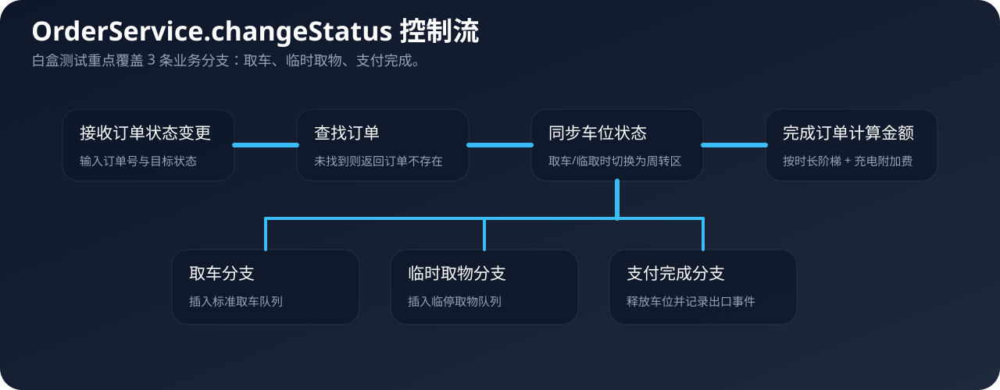
| 路径 | 输入 | 关键分支 | 预期状态 | 测试结论 |
|---|---|---|---|---|
| P1 | retrieve |
status == RETRIEVING |
订单取车中，车位进入缓存，调度队列新增取车任务 | 通过 |
| P2 | touch-and-go |
status == TOUCHING |
订单临时取物，车位进入缓存，调度队列新增临取任务 | 通过 |
| P3 | pay |
status == FINISHED |
订单关闭，金额计算，车位释放 | 通过 |
| P4 | 不存在订单 | findOrderByNo 为空 |
抛出 ORDER_NOT_FOUND |
通过 |
10.2 DeviceService.setEmergency 控制流
急停逻辑是 AI 入侵、控制台急停、闸机释放、节点状态之间的安全联动核心。
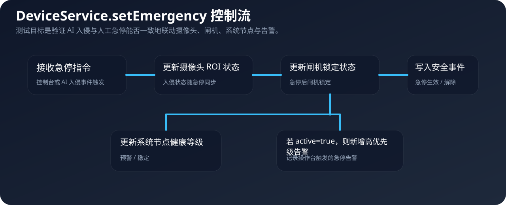
| 路径 | 输入 | 关键分支 | 预期状态 | 测试结论 |
|---|---|---|---|---|
| E1 | active=true |
启动急停 | 摄像头 ROI 风险、闸机锁定、节点预警、新增高优先级告警 | 通过 |
| E2 | active=false |
解除急停 | 摄像头恢复、闸机恢复自动模式、节点稳定 | 通过 |
| E3 | 缺少参数 | 参数异常 | 返回 HTTP 400 和 VALIDATION_FAILED |
通过 |
11. 非功能测试
11.1 性能测试方法
本轮性能测试采用 Node 脚本直接请求后端接口。读取类接口使用 60 次请求、并发 10；报表接口使用 30 次请求、并发 5；AI 推理接口会写入设备事件，因此使用 30 次请求、并发 3。
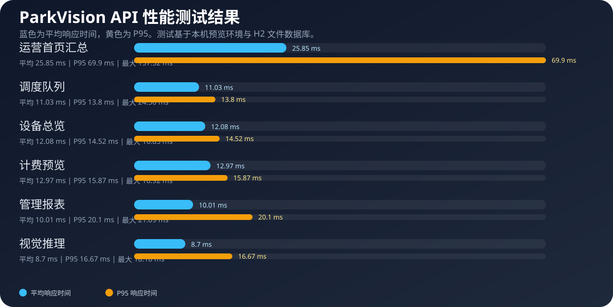
| 接口场景 | 请求数 | 并发数 | 平均响应 | P95 | 最大响应 | 成功率 |
|---|---|---|---|---|---|---|
| 运营首页汇总 | 60 | 10 | 25.85 ms | 69.90 ms | 157.52 ms | 100% |
| 调度队列 | 60 | 10 | 11.03 ms | 13.80 ms | 24.56 ms | 100% |
| 设备总览 | 60 | 10 | 12.08 ms | 14.52 ms | 16.85 ms | 100% |
| 计费预览 | 60 | 10 | 12.97 ms | 15.87 ms | 16.92 ms | 100% |
| 管理报表 | 30 | 5 | 10.01 ms | 20.10 ms | 21.09 ms | 100% |
| 视觉推理 | 30 | 3 | 8.70 ms | 16.67 ms | 18.18 ms | 100% |
测试结论：在本地 H2 文件数据库和后端模拟设备条件下，主要接口平均响应均小于 60 ms，P95 均处于可接受范围内，适合课程演示和系统汇报。
11.2 可靠性测试
| 测试内容 | 结果 |
|---|---|
| 服务启动 | 前后端可通过 start.ps1 启动 |
| 服务健康 | 后端返回 UP |
| 数据持久化 | 订单、调度、设备事件写入 H2 文件库 |
| 异常恢复 | 急停可触发、可解除，设备状态同步恢复 |
| 前端轮询 | 页面定时从后端刷新核心状态 |
11.3 安全与边界测试
| 测试内容 | 结果 | 说明 |
|---|---|---|
| 业务异常不泄露堆栈 | 通过 | 返回统一 ApiResponse |
| 非法订单号 | 通过 | 返回 ORDER_NOT_FOUND |
| 缺失参数 | 通过 | 返回 VALIDATION_FAILED |
| 急停安全状态 | 通过 | AI 入侵与人工急停均能锁定闸机 |
| 鉴权登录 | 未接入 | 当前演示系统未实现用户登录和权限认证 |
安全结论：当前系统具备基础异常隔离和安全状态联动，但如果进入真实生产场景，还需要补充登录鉴权、角色权限、接口限流、操作审计和敏感配置管理。
12. 可用性测试
12.1 导航性
| 检查项 | 结果 |
|---|---|
| 左侧导航 | 9 个页面入口清晰，覆盖运营、AI、调度、管理、车主端等场景 |
| 页面标题 | 每个路由均有业务标题 |
| 页面跳转 | 运营首页可跳转数字孪生，侧边栏可进入所有模块 |
| 操作入口 | 顶部栏提供模拟入场、预调度、急停等核心操作 |
12.2 可视性
| 检查项 | 结果 |
|---|---|
| KPI 展示 | 占用率、吞吐量、AGV 在线数、告警数直观 |
| 状态颜色 | 车位、急停、告警、VIP 状态有明显区分 |
| 表格展示 | 管理台订单、告警、计费规则、名单可读 |
| 设备状态 | 摄像头、闸机、充电桩字段完整 |
12.3 交互友好性
| 操作 | 结果 |
|---|---|
| 采集画面 | AI 页面可触发后端推理 |
| 生成报表 | 管理台可生成报表和曲线 |
| 取车 | 车主端可触发取车 |
| 临停取物 | 车主端可触发临时取物 |
| VIP 优先取车 | 车主端可触发 VIP 插队 |
| 紧急停车 | 顶部急停可联动设备和数字孪生 |
12.4 错误处理
| 场景 | 用户/系统反馈 |
|---|---|
| 后端不可用 | 前端保留 fallback 模式，避免页面完全空白 |
| 非法订单号 | 后端返回明确错误码 |
| 缺少必要参数 | 后端返回参数校验错误 |
| 急停状态 | 数字孪生页面显示“紧急停车”，系统节点进入预警状态 |
13. 测试过程中发现并修复的问题
| 编号 | 问题 | 发现方式 | 修复结果 |
|---|---|---|---|
| BUG-01 | 急停接口缺少 active 参数时返回 500 |
黑盒异常测试 | 增加缺失参数异常处理，返回 HTTP 400 |
| BUG-02 | AI 推理并发写设备事件时 ID 可能碰撞 | 性能测试 | 设备事件 ID 增加 UUID 后缀，性能测试成功率恢复 100% |
这两个问题都属于系统测试阶段应暴露的问题。修复后重新执行了功能、黑盒和性能测试，结果全部通过。
14. 测试结论
ParkVision 当前已经达到“可交付系统测试演示版”的标准：
- 核心页面已经不是前端静态假数据，而是优先读取后端 API。
- 订单、车位、调度、设备、计费、导航、报表之间形成了可验证的状态联动。
- 数据默认写入 H2 文件数据库，仓库拉取后无需手工建库即可运行。
- 外部设备虽然不接真实硬件，但已经通过后端模拟 ONVIF、Modbus/TCP、OCPP 风格数据，并参与系统联动。
- 功能测试、黑盒异常测试和性能测试均通过。
- 页面截图、接口结果、性能图表、白盒控制流图均已沉淀为报告和 PPT 可复用素材。
后续如果继续提升，可以补充登录鉴权、接口限流、端到端自动化测试和真实 MySQL 部署配置，但这些不影响当前系统测试汇报。
15. 附录：测试产物清单
| 产物 | 路径 |
|---|---|
| 系统测试结果 JSON | docs/testing/assets/data/system-test-results.json |
| 性能测试结果 JSON | docs/testing/assets/data/performance-summary.json |
| 测试流程图 | docs/testing/assets/figures/test-process.svg |
| 数据规模图 | docs/testing/assets/figures/dataset-overview.svg |
| 测试结果总览图 | docs/testing/assets/figures/test-results-overview.svg |
| 性能测试图 | docs/testing/assets/figures/performance-benchmark.svg |
| 订单服务白盒流程图 | docs/testing/assets/figures/order-service-flow.svg |
| 急停控制白盒流程图 | docs/testing/assets/figures/emergency-control-flow.svg |
| 前端真实截图 | docs/testing/assets/screenshots/*.png |
| 报告样式 | docs/testing/assets/report.css |